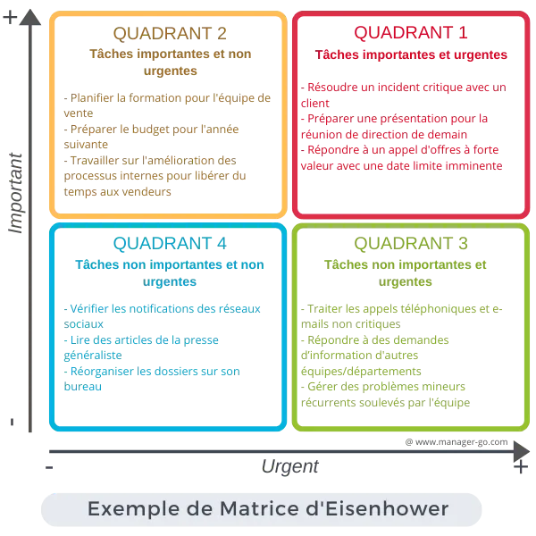

Il ne suffit pas simplement d'avoir des objectifs. Pour qu'ils soient véritablement utiles, vos objectifs doivent être SMART (Spécifiques, Mesurables, Atteignables, Réalistes et Temporellement définis).
Spécifiques : Définissez précisément ce que vous souhaitez accomplir dans chaque matière. Par exemple, plutôt que de dire "réviser les maths", dites "réviser les équations différentielles du chapitre 4".
Mesurables : Indiquez la manière dont vous allez évaluer si l’objectif est atteint (faire 10 exercices correctement, atteindre 80 % sur un test blanc).
Atteignables : Assurez-vous que votre objectif est réaliste par rapport à votre niveau actuel.
Réalistes : Ne surchargez pas vos journées avec trop d'objectifs. Un ou deux par jour suffisent souvent pour avancer sans se démotiver.
Temporellement définis : Déterminez des délais précis, par exemple : "Comprendre les boucles en C d’ici vendredi soir."
Classez vos tâches selon deux axes :
Urgent : Ce qui doit être fait immédiatement (comme un contrôle demain).
Important : Ce qui a un impact significatif à long terme (comme réviser pour un examen final).
Cela vous permet d’allouer votre temps efficacement. Utilisez la Matrice d'Eisenhower pour décider quoi faire en premier.
La clé ici est de maximiser vos créneaux disponibles pour réviser sans négliger vos cours réguliers.
Évaluez vos plages horaires libres : Prenez le temps de dresser un emploi du temps qui inclut toutes vos heures de cours et les moments où vous êtes libre en soirée ou en semaine. Cela vous donnera une vision claire des créneaux que vous pouvez utiliser pour vos révisions.
Par exemple:
Il est important de structurer chaque session de révision en fonction de vos capacités de concentration. Le cerveau humain a tendance à être plus efficace sur des périodes courtes et intenses.
Ce système vous permet de rester concentré sans vous épuiser et d'utiliser vos soirées efficacement sans perdre en productivité.
Une fois que votre planning est en place et que vous avez défini vos objectifs, il est essentiel d’utiliser des techniques de révision qui correspondent à votre style d’apprentissage et aux matières que vous étudiez. Il ne s'agit pas simplement de relire ses notes ou de refaire des exercices, mais de choisir la méthode la plus efficace selon les besoins de chaque matière.
Que vous ayez besoin de comprendre des concepts complexes, de mémoriser des formules ou de vous entraîner à résoudre des problèmes, il existe des techniques spécifiques pour chaque type de révision. Vous pouvez par exemple recourir à la répétition espacée pour la mémorisation ou à la révision active pour tester votre compréhension. Pour une description détaillée de ces techniques et savoir comment les appliquer à vos séances de révision, référez-vous à la prochaine partie de ce guide de ce guide, où nous explorerons les différentes méthodes de révision en profondeur.